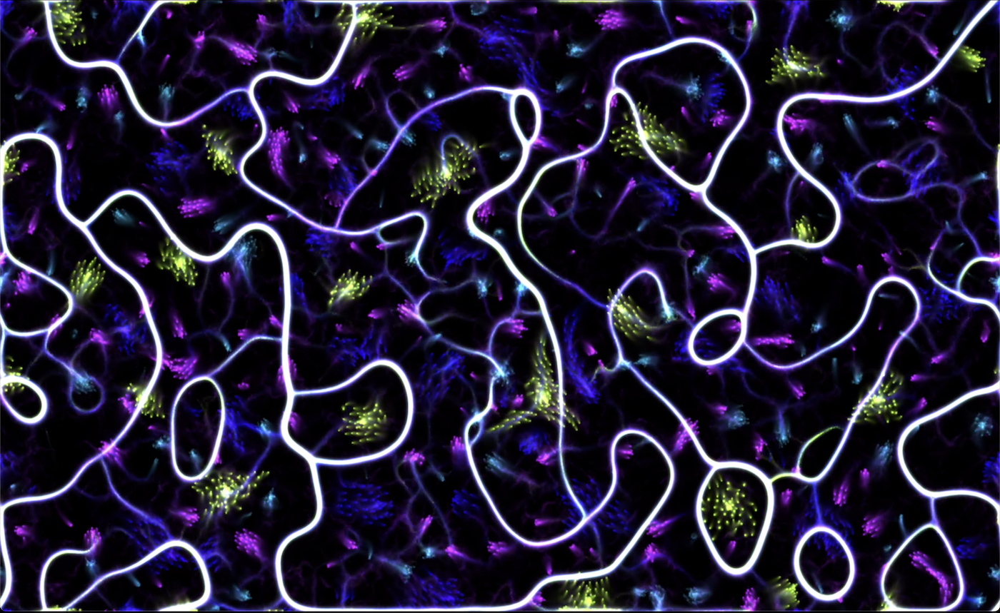

Sardine is a live coding environment and library for Python 3.10+ focusing on the modularity and extensibility of several base components (clocks, parsers, handlers). Sardine has been designed to be easily integrated with existing live coding environments as both a tool for experimentation, and a demonstration of various live coding techniques: temporal recursion, patterning, integration in various hardware and software setups. Although the tool is still in active early development, it has already been used in multiple public performances and algoraves, partly enabled by its support for MIDI IN/Out, OSC IN/Out and SuperCollider/SuperDirt one-way communication through OSC. This paper is dedicated to the introduction of the Sardine system, and the explanation of the main guidelines currently followed by contributors to the project. It will also present the preliminary results of our work through practical realisations that served as experimental validation during the early stages of development.
Sardine is a musical live coding library based on Python 3.10+
focusing on modularity and extensibility of several base components.
Despite the fact that the project is not yet one year old, Sardine is
already extensively documented on a dedicated website providing
installation guides, documentation and tutorials. Sardine provides three
main features built over the basic Python interpreter and linked
together by the FishBowl – an environment handling
synchronisation and communication between them:
A scheduling system based on asynchronous and recursive
function calls inspired by the concept of temporal recursion (Sorensen 2013).
Calls can be scheduled in musical time either on an
InternalClock or a LinkClock based on the Link
Protocol (Goltz
2018).
A modular handler system allowing the addition and/or
removal of various inputs/outputs (e.g. OSC, MIDI) or base components
through a central dispatch environment named the
FishBowl. This allows the customisation of IO logic,
without the need to rewrite or refactor low-level system
behaviour.
A general purpose number-based algorithmic pattern language with support for generative constructs. This language allows the playful manipulation of melodies, audio samples, synthesizers, synthesis parameters and data used by the various components to create algorithmic music.
Sardine, by design, is in the direct lineage of previously released
Python based libraries such as FoxDot
(Kirkbride
2016), Isobar
(Jones, n.d.) or the
very recent port of TidalCycles in
Python, TidalVortex
(McLean et al. 2022).
At its inception, the Sardine project was thought as an attempt to
provide a functional but barebones live coding library to be used for
demonstration purposes in a dissertation manuscript. Sardine partially
emulates some selected features from the previously mentioned libraries
or from the dominant live-coding dialects such as the Tidal pattern
mini-notation (McLean 2014) or the Sonic Pi imperative scheduling syntax
(Aaron 2016).
To serve its initial purpose, the library had to be capable enough for
showing the impact of design and implementation choices on the
possibilities of musical expression and on the expressiveness offered by
a live coding environment. In consequence, Sardine has been designed as
an agnostic framework for approaching live coding using Python. The
library aims to support different writing paradigms and different
approaches to live performance based on the manipulation of source code.
The reliance on regular Python asynchronous functions for scheduling and
music writing means that Sardine is particularly suited to let each
developer-musician build their own personal coding style, providing a
blank slate for experimental interface building. Furthermore, Sardine’s
design has been strongly influenced by McPherson and Tahiroğlu’s
concerns about the idiomatic patterns (McPherson and Tahıroğlu
2020) of usage enforced by computer music software, pushing users
to repeat and strictly follow prefered patterns of usage. Sardine
focuses on laying out the base infrastructure needed to support live
coding in Python and wishes to encourage users to imagine diverse
patterning idioms and live coding targets, mini-notations or user-facing
scheduling mechanisms and syntax. The system’s modular architecture is a
first step towards the inclusion of more targets and custom input and
output handling. Initial work for the 0.1.0 has been based
upon an older personal attempt at writing a live coding library, then
named ComputerTalk1. ComputerTalk’s base
design was not suitable with Sardine’s goal, and so the base has quickly
evolved after the first initial public tests, aiming for increased
modularity of the system in order to maximise IO options.
The version hereby presented – v0.3.0 at the time of
correction – offers a first look into the complete intended design for
the library, and is a near complete rewrite over the 0.1.0
version previously used by members of the French live coding scene and
by the first global Sardine users. It features two different clock
implementations, multiple handlers for IO (MIDI, OSC, SuperDirt), a
robust asynchronous temporal recursive scheduling system, and a
reimagining of the Player system previously introduced by FoxDot (Kirkbride
2016). Since february 2023, Sardine also includes a prototype
parser for the Ziffers
language for musical pattern notation developed by Miika Alonen.
Sardine’s originality lies in the implementation of its temporal model,
strongly anchored in Python’s default mechanisms for asynchronous
programming. It has been developed collectively with the help of John
Phan, based on user requests and feedback gathered during a first period
of experimentation that saw Sardine being used or integrated by
musicians for several algoraves, network-based jams and musical
performances. Sardine has been developed exclusively using the Python
programming language.
Some libraries, providing critical functionality such as MIDI I/O or network synchronisation are obtained through Python bindings to C++ external libraries. Despite the known shortcomings of Python for interpreted real-time programming (incomplete support of dynamic programming, slowness relative to other interpreted languages), we believe that this language is suitable for the implementation of a live coding library. The large collection of available libraries and modules and the popularity of the language ensures the affordance of good tooling and rich customization and integration options for different text editors, running environments, and more. Sardine already takes advantage of a thorough ecosystem of libraries focused on data input/output, network communication and text manipulation. Moreover, thanks to its lightweight and clear syntax, Python can be read by programmers coming from various backgrounds, making it a convenient platform for collaboration and experimentation with bespoke features needed by performers.
In the present article, we will introduce Sardine by detailing its goals (1) and base implementation centered on the scheduling mechanism (2), the environment/handler system (3) and the mininotation support (4). By doing so, we hope to highlight the basic principles of its inner workings, while providing some context on the current direction taken by the project and by its users.
The development of Sardine began initially in a period of active collaboration and joint performances with the Parisian Cookie Collective (“Cookie Collective” 2016) and the Digital Audio Community from Lyon (France). Stemming from the demo and shader-coding scenes, Cookie Collective’s members are known for their complex multimedia performances. Each member typically relies on bespoke hybrid audio-visual setups ranging from low end computing devices to complex synthesizers and circuit-bent video mixers. The Cookies are also known for working in an improvised manner, customising setups for each venue depending on audience needs and expectations. This need for customisation gave rise to the idea of a modular interface that could be used and mastered by every member of the collective, while allowing for jam-ready synchronisation with other musicians and live-coders. The recent splitting of FoxDot’s development into several scattered branches reinforced the need for a central, customisable and easily editable Python interface, the library being used particularly in the French live coding community. Due to an open-ended development process, Sardine has been gradually shifting towards its current modular architecture, allowing each performer to refine the system, from simple MIDI note output to more convoluted SysEx and OSC handling. The invaluable help and expertise from John Phan has allowed for a rewrite of every base mechanism. The finalisation of Sardine’s new framework allows focus to turn towards introducing new features and improving existing ones, with users being encouraged users to propose ideas and contribute code and documentation.
Having completed most of its initial objectives as a demonstration tool – the imitation and reproduction of known mechanisms – Sardine is now gradually shifting towards a more creative open-ended development process. This process is twofold: to facilitate the installation, learning and use of the software on the one hand, and to extend its expressive capabilities on the other. Although these two tasks can be seen as related, the former has more to do with the inclusion of new users, while the latter has to do with creative exploration for the more experienced users. In order to strengthen the accurateness of our aim, we have chosen to present Sardine to various audiences (at PyCon France, in hackerspace workshops or informal musician meetings) in order to study user’s usage patterns and expectations when confronted to the software. This has led to many multi-platform support fixes and improvements. This has also led to improve the usability of Sardine without a dedicated text editor or to improve the quality and quantity of documentation provided with the software.

Sardine is implemented and distributed as two complementary Python
modules: sardine and fishery. The
fishery module is a modified version of the base Python
asynchronous REPL2. Starting fishery
automatically imports Sardine and starts a new live session. To
facilitate configuration and orchestration of the various components of
the system, a terminal based configuration client,
sardine-config, is also provided. This tool is designed as
a user-friendly interface for the editing of configuration files.
Configuration files are stored in a single folder inside a OS-specific
default standard location (e.g. .local/share
on UNIX systems), and include a main JSON file, a blank .py
file used for loading custom Python code among other files needed to
properly configure a SuperCollider or SuperDirt session. Despite its
initial complexity, this approach makes Sardine more accessible to
novice users who may not be familiar with the command line, with Python
development tools or with plain-text editing of configuration files. In
order to encourage modularity in user’s configuration, many of the input
and output components are disabled by default. This makes the
installation of other programs like SuperCollider entirely optional
while also encouraging users to consider their needs for a successful
interaction with their own instruments and softwares.
Sardine does not require usage of a specific editor or text-editor
plugin. Any IDE3 or coding environment capable of
spawning a command line interface and sending code to it is sufficient.
Fortunately, these features are usually included by default in most
popular code editors or Python-specific plugins4.
With this approach, Sardine has been successfully tested with Atom,
VSCode, Emacs, Vim/Neovim and Jupyter Notebooks. Sardine uses the Python
interpreter mainly as a code receiver and a monitoring tool for
displaying useful information to the user, such as the state of a
SuperCollider sub-process, or of an event loop. Since january 2023, some
effort has been put into the development of an internal text editor
named fishery web for its reliance on web technologies.
This editor uses the Flask Python web application
framework to serve a text editor web application composed using the Svelte frontend library
and WebSockets (Fette and Melnikov 2011) for
communicating between the web browser and the local fishery
instance. This text editor, fully dedicated to newcomers, already
includes automatic handling of text files and quick access to
documentation.
Reliance on an audio backend requires booting another application. So
far, SuperCollider and SuperDirt are natively supported to do this by
their own Sardine components. Even though the installation of these
backends is still necessary for users willing to use them, integration
is done in such a way that there is no need – later on – to actively
take care and monitor any of these dependencies. A basic interface to
SuperCollider is offered through the SC() function,
allowing to run arbitrary sclang code in the subprocess
session. A more thorough integration with SuperCollider is planned for
inclusion in future versions of the software. Clever usage of the
provided tools for MIDI and OSC communication already allows users to
generate custom mappings to other custom audio custom backends (Max/MSP
patches, DAW, etc).
Sardine is packaged as a regular Python module, making use of the
pyproject.toml module configuration and packaging format
defined by PEP 660,
meaning only a base Python 3.10+ runtime is required for installation.
Sardine has recently been packaged and released on PyPi,
allowing installation using a simple command:
python -m pip install --find-links https://thegamecracks.github.io/python-rtmidi-wheels/ sardine-system.
All C++ dependencies and wheels – binary distribution of
compiled packages – are available for every major platform. This also
means Sardine is compatible with the recent release of Python 3.11.
Sardine makes use of Python’s asynchronous programming features,
specifically the asyncio REPL prototype introduced by
Python 3.8 (Selivanov
2019). The UVLoop (Selivanov 2016) drop-in replacement event
loop is also used in order to speed up asynchronous call scheduling
(except on Windows). Several hot-patches to the asynchronous loop have
been introduced by John Phan (thegamecracks) to make its
behaviour consistent on every major OS platform. Sardine is laid out as
a series of abstractions built on the base loop, making it aware of
tempo and timing. Sardine’s clock (either internal or
link) automatically starts whenever the system is imported,
but pure asynchronous calls can still be handled even if the clock is
stopped. The LinkClock allows Sardine users to connect
their session to a global tempo on a local network, enabling networked
synchronisation of several Sardine instances and/or other Link-enabled
devices5. All Sardine clocks provides the
same interface, allowing the system to retrieve the current bar, beat
and position in musical time. Time drift compensation and time shifting
needed by some features is handled by the low-level event loop system.
Asynchronous clock consistency is covered by tests (in the
tests/ folder) and favourably compares with alternatives
offered by similar, more widely used threaded clocks. Development of
such a feature has proven to be a difficult technical challenge due to
the specificity of the task, and of the relatively obscure and scarcely
documented inner workings of each OS’s internal schedulers. Threaded
components are still used for various IO operations to lighten the load
of the event loop and to alleviate the temporal cost of message
processing. Many Sardine components are optional and can be activated on
demand by the user, apart from the clock,
AsyncRunners and SleepHandler core
abstractions needed for asyncio loops. Basing Sardine’s
custom event loop on Python’s asynchronous interpreter allows for the
evaluation of any top-level asynchronous await instructions
that would be forbidden by the main interpreter. However, Python
asyncio ultimately behaves differently on every major OS
due to its binding with system-level mechanisms, and more empirical
testing is needed to document OS-specific limitations of this
approach.
Python does not feature native tail-call recursion support (Rossum 2009a,
2009b), making the infinite recursion of a function, as Sardine
requires, a delicate task. Support for this central feature is based on
John Phan’s AsyncRunners, which is the basis for every
repetitive operation – such as a repeating pattern – scheduled within
Sardine. In the spirit of the nautical theme of Sardine, a temporal
recursive function is called a swimming function and is
labelled in code as an AsyncRunner. Swimming functions can
be started using the @swim decorator6,
stopped using the @die decorator, and can receive updates
throughout its lifetime on the scheduler (see Figure 3).
Decorated asynchronous Python functions are passed to the scheduler,
making them repeat every p (for period), a
time measured in beats relative to the clock currently in use. The
content of a given function will be re-evaluated for every recursion
cycle and state can be preserved either by passing arguments to a
subsequent call or by relying on global state. Swimming functions are a
powerful construct for building abstractions dealing with time, code
re-evaluation and dynamic lifetime management of code components.
Iterators, for example, can be built by incrementing a variable passed
as an argument. Random generators can be built by calling a simple
native random function whose result will be dynamically updated for each
recursion.
Swimming functions will automatically start on-the-beat. The start of
a function can target a specific point in musical time by specifying a
special snap argument that is intepreted as an offset in
beats from the beginning of the next bar. The until keyword
can also be used to give to each swimming function an explicit
end after n iterations. The period argument of
a given function is the only required argument for a function to be
considered as a valid swimming function. All Sardine components are
based on the assumption that their evaluation context will be as a
swimming function. They can receive any arbitrary Python code and/or
call the various players defined by the Sardine system to handle IO
operations. Thus, the prototype of a basic musical function using the
previously defined model looks like the following:
@swim # swimming decorator (swim or die)
def swimming_function(p=0.5, i=0): # p: (period), i (custom iterator)
print('I am swimming in time.') # genuine function call
D('bd hh cp hh', i=i) # call to the 'Dirt' SuperDirt interface.
... # other user specified code
again(swimming_function, p=0.5, i=i+1) # recursion callback with argument passing
silence(swimming_function) # Various commands to stop recursion
swimming_function.stop()Multiple abstractions can be built on top of the basic swimming
function mechanism, allowing for a terse user-facing syntax. Building
abstractions on top of @swim is helpful to allow newcomers
to grasp the system’s temporal model. The FoxDot-inspired
surfboard mechanism is the first available abstraction
demonstrating this principle. It automatically handles its own
scheduling logic and provides its own iterators to the default parser.
As demonstrated by the following example, it also provides customised
musical logic, thus adding a completely new flavour of patterning and
scheduling over the basic swimming functions. Following this
model, Sardine future versions are likely to include user-based playing
modes built upon the basic abstractions provided by the library. The
experimental Ziffers notation integration to Sardine relies on a similar
design pattern, the customization of swimming functions.
Pa >> d('bd hh cp hh', p=0.5) # Terser version of the above swimming function.
Pb >> d('voodoo', span=2) # 'span' extends the inner-hidden swimming
# function duration to span over twice the
# duration of Pa.
Pc >> d('voodoo tabla', legato=0.1, span=2, p='1 2 3 4')
# duration values of Pc will be fitted to the
# duration of the given timespan.
Pc >> None # alternative to @die
Pc.stop() # similar commandWorthy of note is Sardine’s sleep() method, which has
been overridden from the default Python time.sleep()
function that would, if used, block the event loop. This function defers
the execution of any statement or expression defined thereafter to
x beats in the future, even if these events take place after
the next recursive call, a phenomenon known as oversleeping. Unlike
time.sleep(), Sardine’s sleep() does not block
the function from running to its end, instead it temporarily affects the
value of clock.time and extends the perceived time of
methods using that property. This mechanism mimics the
sleep() statement found in other live coding tools such as
Sonic Pi (Aaron,
Orchard, and Blackwell 2014). This mechanism can be used
explicitely by the user or implicitely by functions implementing
algorithmic transformations of a simpler event.
@swim
def sonorous_cake(p=2, i=0):
D('jvbass!4 jvbass:4', midinote='C Eb G D', i=i) # SuperDirt calling sample playback
sleep(1) # Deferring further operations to next beat
D('jvbass:4!4', midinote="C' C''!3", i=i) # Other sample playback
again(sonorous_cake, p=2, i=i+1) # Recursive callFishBowlWhile scheduling takes an important role in the overall modular
design of the Sardine library, its logic wouldn’t function without a
central piece of the system called the FishBowl. The
FishBowl is an environment for software components, and
handles synchronisation and coordination between all the different
pieces composing a Sardine system. It is designed so that every
component of the system can talk and instantly access data held by any
other component. The FishBowl allows components to
subscribe to it through hooks, and to react to messages
through a dispatch system. The
bowl.dispatch('stop') message is an example of such an
event which stops the clock and requests for the collaboration and
immediate response of multiple components. Naturally, some components
are more important than others and can thus be considered as hard
dependencies. Other soft dependencies, mainly the various IO handlers
available, can be added and removed from the environment or session at
any point in time. The clock and the parser
are two hard dependencies that cannot be completely removed, but can be
swapped. They provide the basic mechanisms needed by other modular
components to properly function. The fluidity of the
FishBowl mechanism allows for the addition and removal of
modular logic to any Sardine system capable of answering to any message
currently being dispatched to other components. One can switch from the
internal to the link clock on-the-fly if the
need arises to synchronise with other players, or add a new OSC
receiver.
bowl = FishBowl(clock=clock(tempo=config.bpm, bpb=config.beats)) # declaring the bowl
...
midi = MidiHandler(port_name=str(config.midi)) # instance of new component
bowl.add_handler(midi) # adding to the environment
M = midi.send # aliasing for playabilityIn the previous code example, a MIDI handler was added to the
FishBowl, giving access to a new MIDI output.
Senders are one type of Sardine modular components which
requires the collaboration of multiple parts of the system to function
properly. The N (midi.note_send) is one of the
possible outputs and user interface offered by this component. To
operate efficiently, it requires an access to the parser
for patterning and composing a valid message, to the clock
for sending its message in musical time, and to the
SleepHandler to precisely time calls between a Note On and
Note Off message. By declaring itself to the environment, it gains
access to these required features, that will be accessed transparently
without having to deal with lower-level logic. Consequently, user
interaction can be implemented through one minimal function only,
letting the system handle the hard and slightly convoluted asynchronous
scheduling calls taking place in the background.
# basic MIDI note scheduling (duration handled by bowl.SleepHandler)
N(note=60, velocity=100, channel=0, dur=0.25)
# patterning a similar call with added component-specific logic (strings parsed by bowl.parser)
N(note='C@penta C.. G3', velocity='80~100', channel='[0:10]', i=i, r=2)Similar senders or handlers can be implemented for various operations
requiring collaboration between multiple parts of the system. Given that
each one of these adhere to the BaseHandler abstract base
class, adding a component to Sardine does not require refactoring of the
base system. Most of the internal critical components of Sardine work by
taking advantage of interconnection of every component, allowing one
component to affect the behaviour of the whole environment, if needed.
Given that handlers generally implement one specific input or output
protocol, one handler is generally responsible for providing many
different senders (e.g MIDI note, MIDI control change, MIDI
program change, etc) as well as custom variants (Ziffers SuperDirt
interface, etc).
Initially for demonstration and usability purposes, a small
domain-specific language (DSL) for musical patterns has been developed
for Sardine using Lark
(Shinan n.d.) for LALR
parsing. The DSL’s source code is directly included in the
sardine module, in the sequences/ directory. A
DSL was needed to deal with the limited support provided by Python for
syntactic macros (à la Lisp) and operator overloading. The use of the
hard parser dependency is limited to parsing string
arguments provided to any handler’s send methods. These
send functions, common to any sender, act as its principal
interface for patterning and output alike, enabling the creation of
complex data and music patterns, evolving over time in the context of a
swimming function. Patterns play an important role in the workflow of
audio/visual live coders, allowing them to define rich evolving
structures spanning over time (Magnusson and McLean 2018).
A generic interface P() is also available to increase the
patternability of Python code or function calls done in the context of
recursive swimming calls. This basic pattern language is best defined as
a rich and terse interface dealing with lists of arbitrarily typed
elements ranging from numbers to MIDI notes, samples or synthesizer
names, or even OSC addresses. Pattern strings given for each keyword
argument provided to a send method are resolved by the
parser as arbitrarily-nested lists, which are in turn used for composing
an output message. Quite possibly, multiple connections to different
parsers will be supported in future versions as a way to vary the idioms
available for composing patterns. For now one parser is supported in
each instance of the FishBowl, and its use is optional.
# standalone call to the parser, yielding one value per iteration (i acting as the index)
P('1 2 3 2~40 5!4 C@fifths', i=i)
# several calls nested inside a more densely composed call to SuperDirt.
D('amencutup:[1:10]', legato='0.1~0.8', room='0.5', dry='[0.1,0.5:0.05]', i=i) Extensive support has been dedicated to list-based operations for the
composition of sequences. Binary arithmetic operators such as
+, -, * and % can
work either on single tokens or on lists (on both sides). Lists can be
arbitrarily nested. List slicing and value extraction has been
re-implemented in a fashion similar to that of Python. Unary operators
such as (abs x), (sin x) or similar scientific
calculation functions work in a similar way, with the function being
mapped to each element of the list if needed. Basic function calls are
available, opening the pattern language to more complex operations.
Functions can support arbitrary number of arguments and keyword
arguments (e.g.
(disco F A C E ::depth 2 ::cond (beat 1))). Custom
operators have also been defined such as x~y (choosing a
number in range), x|y|z (choosing between x
elements). Other operators have been borrowed to similar pattern
languages such as Ziffers (Alonen n.d.) and TidalCycles:
' for octave up, . for octave down,
: for sample choice, ! for repetition, among
many others. Basic music notation is handled through the conversion of
specific tokens to single MIDI notes (C#4 or
D#4 parsed as 61), silences (a full stop
. or variable size ellipsis ...), list objects
(C@penta parsed as [60,62,64,67,69]) with
support for transposition, chord and structure inversion. A complete
list of all supported operations is provided to the user through
Sardine’s documentation. Support for random and generative structures,
albeit basic, has been implemented. Again, the implementation of this
feature has been facilitated by the definition of the parser as a
component of the FishBowl. This allows the parser to query
the environment and bowl.clock in search of semi-random
number generators, such as the measure number ($.m), phase
($.p) or current beat since the origin of time
($). Similar functions, such as
(phase 0.25 0.5) are implementing conditional operations
based on the available timing information.
# Middle-C MIDI Note with default velocity and channel (N, alias for midi.send_note)
N(60)
# C major natural seventh chord with velocity in between 80 and 120, channel either 0, 1 or 2
N('{C@maj7}', vel='80~120', chan='0|1|2', i=i)
# SuperDirt call, picking samples '0' to '20' in order in the 'drum' folder. Speed parameter
# ramping from 1 to 10 in increments of 2, shape is the sin function of current time divided by 2.
D("drum:[0:20]", speed='[1:10,2]', shape='(sin $)/2', i=i)Querying values from the possible multiple patterns per swimming
function is done by providing a single pattern-wide iterator
(labelled i) as an argument to each sender. Indexing errors
are taken care of by making this index cyclical over the length of each
pattern. The design of the iterator is a key creative choice for the
user. Hence, the preferred method for browsing through the reduced list
patterns can be chosen depending on context: sequentially, in reverse,
or using a random number generator. Additional arguments, namely
rate and div, can help in specifying how the
iterator will be applied to the gathered patterns, adding another
quickly accessible layer of patterning. The rate argument
(aliased to r) is used to compress or extend the number of
iterations needed to move from a list index to the preceding/next. It is
best understood as a way to slow down or speed up the iteration over
patterns. The divisor argument (aliased to div
or d) is a modulo operation between the iteration count and
div that will determine if the current event is to be
played. Other sender-level functions, similar in functionality to
high-level functions applied to musical patterns from live coding
languages such as TidalCycles, have also been experimented with in the
most recent versions of Sardine. While the querying of pattern
information is done by usage of iterators, this new set of function will
use other available temporal information – such as current bar or phase
– to apply transformations to patterns based on a temporal
condition.
@swim
def querying_flavors(p=1/2, i=0):
D('bd cp sn hh', i=i, r=0.5, d=2) # simple iterator: 0, 1, 2.
# Custom rate and div
D('linnhats!4 jvbass', i=-i) # reversed iterator: 0, -1, -2
D('bongo bongo:2', i='rand*50') # random iterator: 0, 24, 5
again(querying_flavors, p=1/2, i=i+1)The iterator-based pattern system appears to be well suited to a
system based on temporal recursion, partly as recursive operations are
often used as iteration tools in functional approaches to programming.
Multiple iterators can be used in the same pattern by playing around
with the P() mechanism previously described. This allows
for the creation of arbitrarily complex patterns composed of multiple
values assigned to any parameter accessible through a given sender. Even
though the list of features provided by the pattern language is dense,
its architecture is not complex and allows for quick customisation and
feature addition. As a downside, the Sardine Pattern Language syntax and
mode of operation can prove particularly difficult to learn for new
users as it requires a good understanding of both recursion and
iteration, the two concepts being used extensively in the overall design
of the basic components. Being modal and modular in nature,
understanding how to apply patterns to both swimming functions
and Players (shorthand notation) can also prove difficult for
new users.
The basic Sardine parser, in spite of its experimental status, is
already useful for increasing the general playability of the system and
for generating complex musical algorithmic patterns. Multiple extensions
and refinements will come in future versions, specifically aimed at
making the pattern language more easy to write and less error prone for
the end-user. New additions will come in two categories, the first
focusing on additions and improvements to this pattern language, and the
second on adding new or different pattern languages. Support for the Ziffers numerical notation
created by Miika Alonen, re-implemented in Python, is in progress and
can already be used thanks to the addition of an additional
package, ziffers-python. To be supported, Ziffers
requires new types of Players, relying on Sardine’s
low-level scheduling mechanisms. Supporting Ziffers is helpful to test
the ease of integrating new writing and patterning paradigms into
Sardine, while – in the process – gaining access to new ways to write
melodic and harmonic patterns. The addition of the CLCE (Common Lisp
Compositional Environment) Time Generators, a non
documented library for algorithmic composition written by Stéphane Letz
and Yann Orlarey (GRAME CNCM7, France) is being
considered as a way to preserve the legacy and compositional ideas
explored by this project. This would make use of Sardine as a tool for
the study of algorithmic composition while allowing the exploration of
more functional approaches to pattern generation.
Over its relatively short timespan, from September 2022 to March 2023, Sardine has already been used multiple times for public music performances. The thrill and danger arising from using an unstable and unpolished software has constituted an obstacle as well as an appealing perspective for most users (Roberts and Wakefield 2018). Jams, informal meetings and dialogue with the wider live coding community were also of the utmost importance to study the integration of Sardine in various musical and technical environments. Here we mention a few specific examples of Sardine usage, and show how being able to live code in Python provides unique advantages (and also potential disadvantages). Numerous specialised devices or handlers have been created to facilitate Sardine interacting with other systems. Hybridations between multiple live coding environments, such as Sardine/TidalCycles and Sardine/Sonic Pi have been tried successfully. Initial failures mostly arised from improper or careless implementations of the synchronisation mechanism. Documentation pertaining to the implementation of live-coding oriented musical clocks and synchronisation mechanism is scarce and most of it had to be inferred from the inner workings of similar open-source libraries. In order to help with the collective effort of documenting live coding practices, we hope to upload a very thorough explanation of the system on the Sardine website to help future developers.
A proto-sender specialised in SysEx communication with a Yamaha TX7
synthesizer unit has been designed by Raphaël in order to enhance
melodic and timbral capabilities of Ralt144MI (Rémi Georges)
current live coding setup, previously mostly based on TidalCycles, MIDI
controllers and audio-video hardware. Using a simple dictionary of
lambda functions, this mechanism uses the previously
described P() function to provide a general patterning
interface for each individual parameter defined in the MIDI
specification of the unit. Subsequent performances led to the inclusion
of more bespoke mechanisms that ultimately made their way into the main
codebase, having been proved useful in the context of live performances
(span, snap, support for polyphony, etc…).
This experience also proved the usefulness of adding better support for
the definition of custom-fit senders and output/patterning
interfaces.
At the Intelligent Instruments Lab in Reykjavík, Jack Armitage has
been using Sardine to live code the Magnetic Resonator Piano (MRP) (McPherson and Kim
2010). In this case, Sardine enabled developing a Python API
client for the MRP much more interactively, due to being able to
redefine @swim functions on the fly. Another attractive
feature of Sardine being written in Python in this case, is that the
entire Python ecosystem can be explored for machine learning based
approaches to instrumental control and interaction8.
This also positions Sardine as a bridging platform for researchers and
practitioners interested in hybrid live coding interfaces, as in this
case where live coding and instrumental practices are blurred. Jack
Armitage has also been live coding artificial life simulations using
Sardine, in the Tölvera library as part of the Agential
Scores project (Armitage 2022). This is one of the first
examples of Sardine being used for visual output. In this case, the
Taichi numerical simulation library was able to run its animation frame
loop as a @swim function, with Sardine’s recursion
occurring fast enough to give 60fps graphics9
(see Figure 12). These early examples showed the diversity of approaches
that are possible in the Python ecosystem, and they also usefully
highlighted usability pain points and performance bottlenecks with
Sardine. As a result, substantial rewriting efforts have been taking
place to accommodate these needs. Motivation for the rewrite process was
found in the perspective to support more of these creative endeavours
that would be hard to undertake in more closed or less configurable live
coding systems.
Sardine is both a new software/environment and an architecture model
for a Python based live coding library. Developed only by a small
dedicated team of developers with a few enthusiastic users, some
features are already hard to keep a track of, for they are not often
used. Much needed updates are currently delayed to address more urgent
concerns. Though tests have recently been introduced, only time-critical
parts of the system are currently extensively covered. The
v.0.2.0 rewrite focused on improvements to the temporal
model and component handling, and although it’s promising, it remains
fragile and requires careful, time-consuming testing to identify
regressions and new issues brought by additions to the model. As such,
regular updates are being released to increase the robustness and
playability of the system.
Now at version v.0.3.0 – at the time of last revision of
this paper –, Sardine has started to stabilise around its core features.
Sardine is in need of documentation focused on new and inexperienced
users. The installation process still requires the installation of a
Python runtime and some knowledge of handling Python packages, a task
which might not be easy for non programmers. Existing text-based
documentation provides a thorough tour and exploration of the system,
but lacks friendly videos, tutorials and content that could boost
Sardine’s adoption curve. As a temporary solution to this, we show code
used by performers in a special Showcase section of the
website. The internal editor, already fully functional, has yet to
become a gate of entry as an easy playground for new users. As a result
of its design and multi-paradigm nature, Sardine is also a system that
can prove to be hard to learn (and teach) depending on previous user
experience with live coding interfaces and programming proficiency.
The source code is extensively documented for contributors but most of the internal documentation is currently invisible to end-users. Sardine’s modularity can be considered as both its major strength and weakness. Initial configuration of Sardine can be quite intimidating for newcomers that may not know what they wish to accomplish with it, especially regarding external IO (MIDI, OSC, SuperDirt, etc.). Most options are disabled by default and must be added manually to configure a session. The reliance of loosely coupled software components (Web editor, Fishery, Sardine, SuperCollider, etc) can prove helpful for veteran live coders that are familiar with such architectures but confusing for new users.
The Sardine project is freely usable and modifiable by its users. It is currently hosted on GitHub under the GNU General Public License v.3.0 (“GNU General Public License, Version 3” 2007). We warmly encourage anyone interested to try this experimental system and help report and triage bugs, and collectively build this new live coding system. Sardine is currently by no means as complete or stable as other existing propositions used by the community. We are still in the process of catching up with the quality and featurefulness of known alternatives, thinking as Sardine as a way to extend or collaborate with other musicians and visualists using different live coding environments.
Raphaël Forment: I warmly thank my thesis supervisors Laurent Pottier and Alain Bonardi for their support and advice in the creation of this tool. I thank the doctoral school 3LA from the University of Lyon for the funding it provided to this research. I extend my thanks to the musicians and friends who allowed me to take Sardine on stage and to present it to a wider audience these few last months, in particular the Cookie Collective, Rémi Georges, Yassin Siouda and many more from the online Sardine chat channels.
Jack Armitage: my work is supported by the Intelligent Instruments project (INTENT), which is funded by the European Research Council (ERC) under the European Union’s Horizon 2020 research and innovation programme (Grant agreement No. 101001848). I contributed use case examples and testing feedback on Sardine’s performance, and assisted with proof reading and final editing of the paper.
Some videos of this older system can be found on Raphaël’s YouTube channel: ↩︎
Read, Eval, Print, Loop: mechanism used by most interpreted languages to process user input from the command line and return textual output.↩︎
Integrated Development Environment.↩︎
The process for setting up various interfaces is extensively detailed on Sardine’s website.↩︎
Sardine has also been integrated with Flok () made by Damián Silvani. This tool for remote live-coding allows any number of users to play by sharing the same code and code evaluation events remotely through the network without sharing the same clock or local audio backend.↩︎
Decorators in Python are used to add a behaviour to an object such as a function without modifying the base object itself.↩︎
CLCE: . GRAME National center for Music Creation based in Lyon, France ().↩︎
Python codebase for the Magnetic Resonator Piano: ↩︎
Code from this experiment can be found on the Tölvera GitHub repository: ↩︎